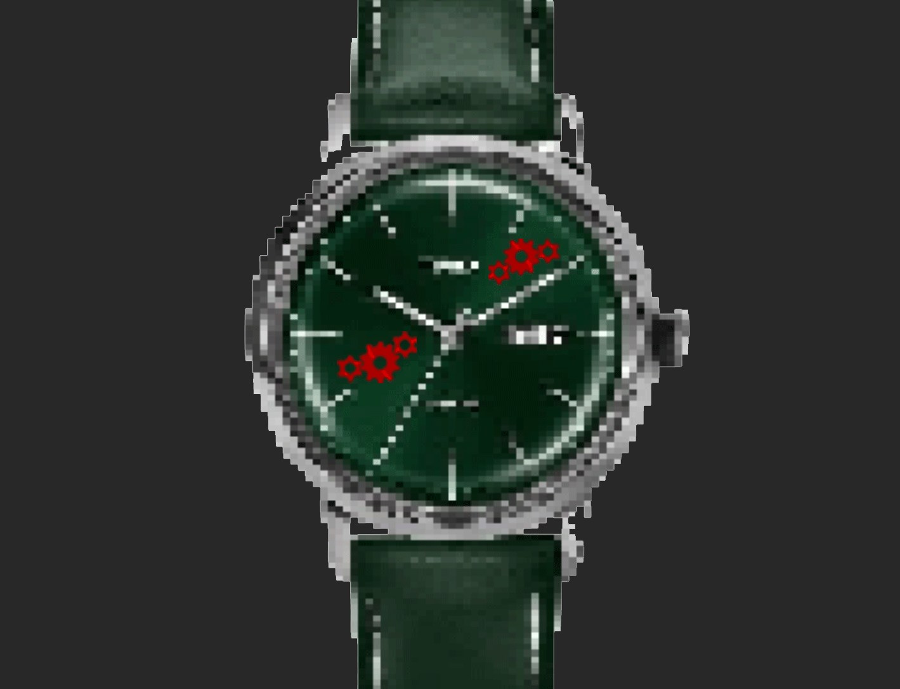

==>

PROMPT:BRACELET
BUTTONS PRESSED:RED GEAR, GRAY SKULL
Description: It is a watch that counts down, and when it hits zero someone coughs or sneezes. And after that the watch sets itself up to countdown again to the next sneeze or cough and it repeats. Is it predicting the future? Or making people cough or sneeze? hmm?
Danger Level: Semi-Unpredictable, it seems safe but it bears some foreseeing or all powerful sickness manipulation. Not dangerous but have to investigate further.
==>Go Back